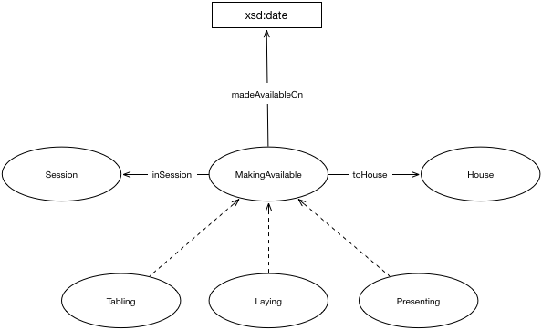

IRI: http://parliament.uk/ontologies/making-available/Depositing
IRI: http://parliament.uk/ontologies/making-available/House
IRI: http://parliament.uk/ontologies/making-available/Laying
IRI: http://parliament.uk/ontologies/making-available/MakingAvailable
IRI: http://parliament.uk/ontologies/making-available/Presenting
IRI: http://parliament.uk/ontologies/making-available/Session
IRI: http://parliament.uk/ontologies/making-available/inSession
IRI: http://parliament.uk/ontologies/making-available/toHouse
IRI: http://parliament.uk/ontologies/making-available/madeAvailableOn
This HTML document was obtained by processing the OWL ontology source code through LODE, Live OWL Documentation Environment, developed by Silvio Peroni.